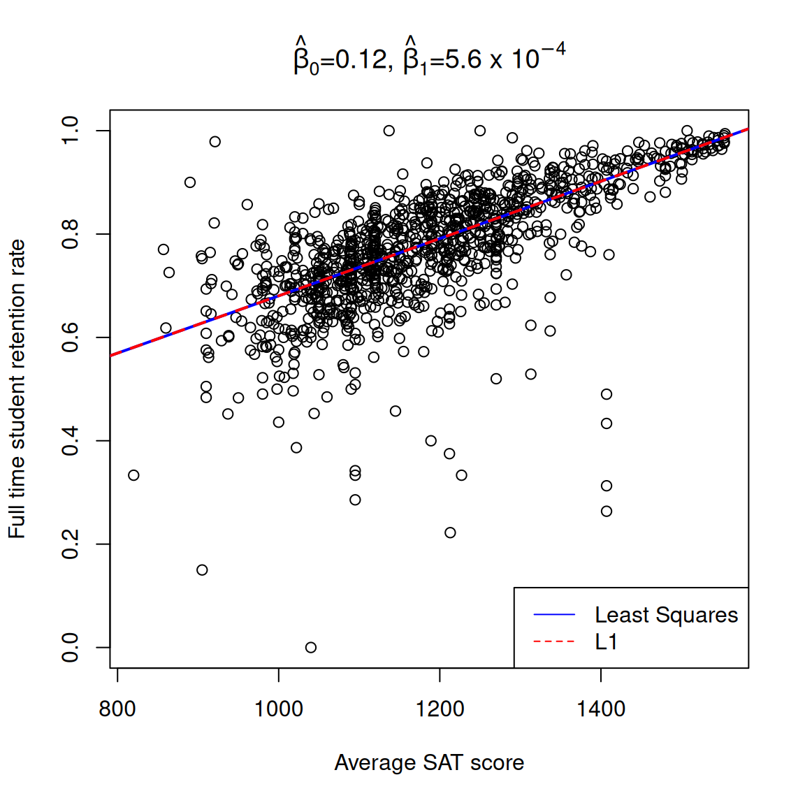
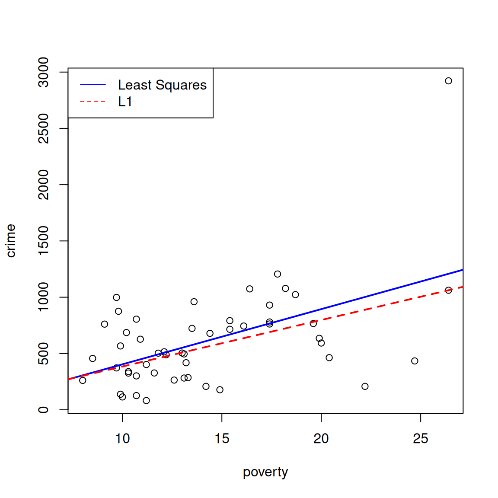
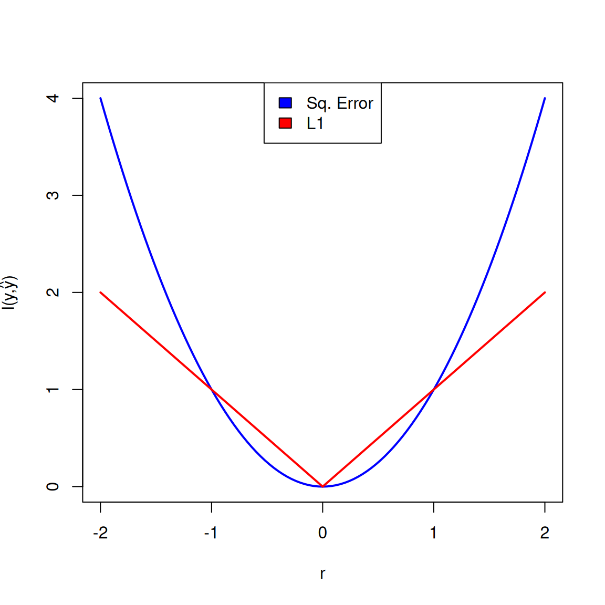
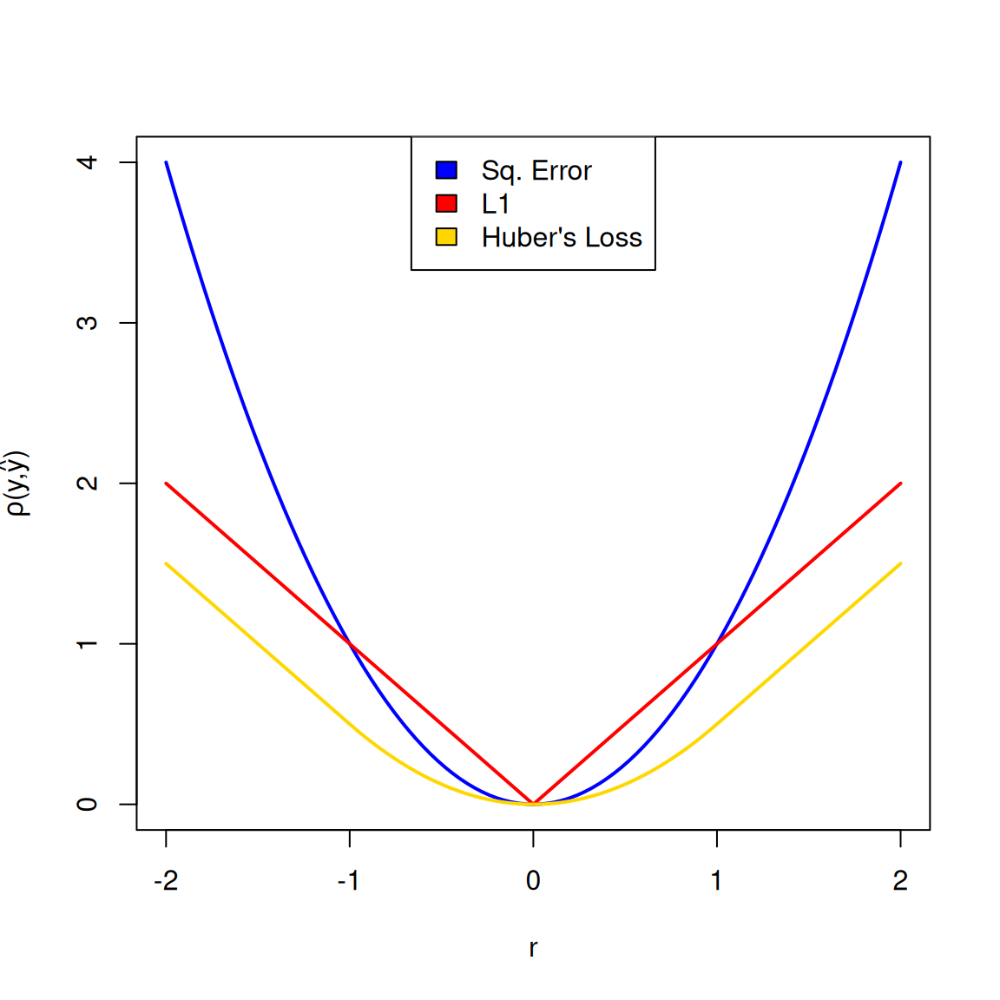
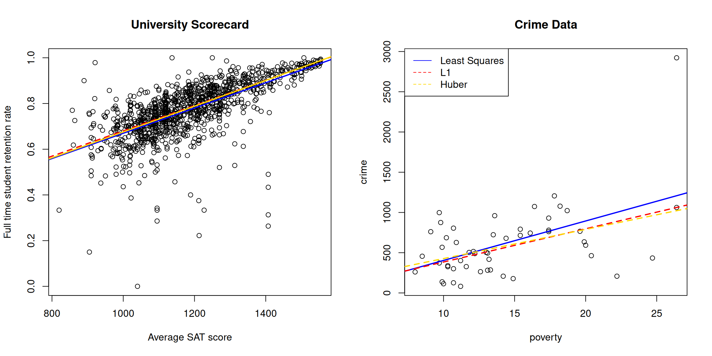
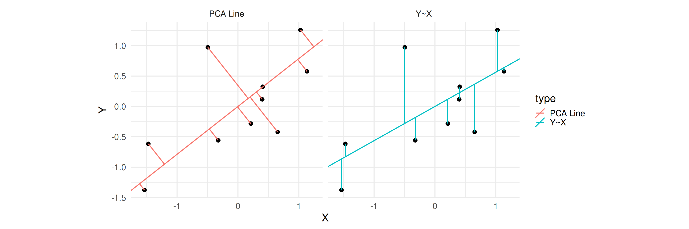
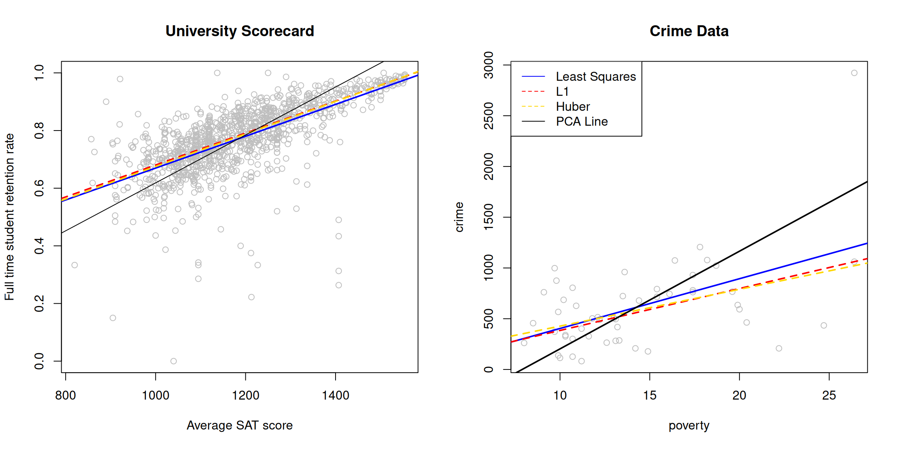
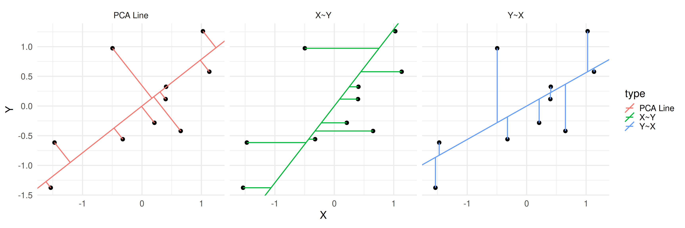
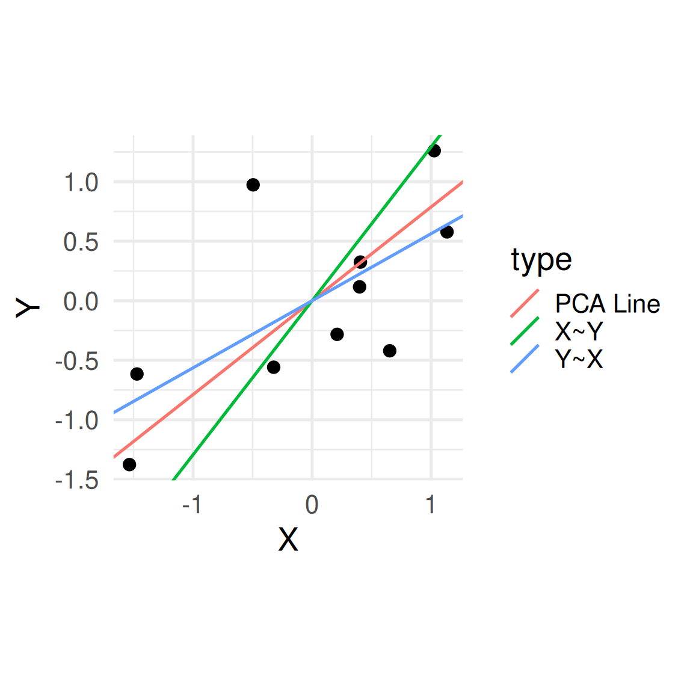

Estimating with Loss Functions and M-Estimators
Corresponding reading
This topic is not covered in our text book. The following references discuss loss functions
These do not cover the material in exactly the same way as I do, and may refer to topics outside the scope of this class. But you may find them to be a useful outside reference, so try to focus on the parts that link back to what is discussed here.
The MLE procedure gives us standard way to find the best estimator if we make assumptions about the parametric model of the data. The MLE uses knowledge of the parametric model to calculate the likelihood and define an optimization goal. The estimator is the result of solving that optimization.
When we step back, we can see that the role of the parametric model was to define the quantity to optimization. We will now consider other alternatives for defining an optimization goal (and justifications for why they might be better in some situations). Much of modern statistics now takes this optimization perspective in defining and improving estimators, though MLE is still a natural starting point.
Questions/Goals for this Module
Extend the MLE to a more general optimization strategy of defining estimators
- Learn what is a Loss function
- Define squared error loss, \(L_1\) loss, and others
- Understand how they emphasize different aspects of the data
- Describe the MLE as an optimization procedure
- Learn about M-estimations as a further generalization
Least Squares Regression
Let’s return to our MLE for simple regression. In the end, we made the modeling assumption that \(E(Y|X)\) could be well described by a line, so that we’re interested in estimating the parameters that define that line. Our MLE estimates, based on a normality assumption, where found as the values that maximized \[\max_{\beta_0,\beta_1} \left(- \sum_{i=1}^n(y_i-\beta_0-\beta_1x_i)^2\right) \] (Recall \(\sigma^2\) didn’t wind up coming into the problem for finding \(\beta_0\) and \(\beta_1\))
Equivalently, we could get rid of that negative and write this as a minimization problem, \[\min_{\beta_0,\beta_1} \sum_{i=1}^n(y_i-\beta_0-\beta_1x_i)^2 \] Looking at just this end result, we can see that we have an observed value \(y_i\) and a prediction of what it’s mean value would be if we knew \(\beta_0\) and \(\beta_1\). Then we could also describe our estimators as the result of finding the \(\beta_0\) and \(\beta_1\) that minimize the difference or the error in that prediction. Stated this way, we are still making the assumption that we want to fit a line to describe \(E(Y|X)\), but we are not explicitly making assumptions about the distribution of the data.
Formulating the goal of our problem directly as a minimization problem is often called least squares regression, and it gives the exact same estimators as our MLE approach.
Loss Functions
How are we measuring that error? We are taking the squared difference for each \(i\). We often call this the loss or observed error incurred for each observation by using our prediction model, \[l(y_i, \hat{y}_i)=(y_i - \hat{y}_i)^{2}\] where \(\hat{y}_i=\hat{y}_i(\theta)=\beta_0+\beta_1 x_i\) is our predicted value of an observed \(y_i\) and it is a function of our unknown parameter \(\theta.\) This loss is often called squared error or \(L_2\) loss.
We are creating an estimator of \(\theta\) by minimizing the average of this value over all our data, \[\min_\theta\frac{1}{n}\sum_{i=1}^n l(Y_i, \hat{Y}_i)=\min_\theta\frac{1}{n}\sum_{i=1}^n(Y_i - \hat{Y}_i(\theta))^{2}\]
Note
Notice I added a \(\frac{1}{n}\) into our formulation. Obviously the \(\frac{1}{n}\) plays no role in the optimization since it’s just a fixed constant. But it allows us to talk about minimimizing the average loss observed on our data, and in general allows us to think of this quantity clearly an estimate of the unknown expectation of the population loss, i.e. the expectation of this loss with a random draw from the population distribution.
Why choose squared-error? Well, it fell out of the normal assumption naturally, but that is just an assumption, as we’ve discussed. It also has the (historical) attraction that we can analytically find the solution, which means we can calculate an explicit equation for the solution to the optimization. But we’ve already seen interesting solutions from the MLE often require using a computer to find the estimate.
However, by writing what we are doing in terms of a loss-function, it clearly opens up the question of using alternative loss functions. The most common alternative could be \(L_1\) loss or absolute error \[l(y_i, \hat{y}_i)=|y_i - \hat{y}_i(\theta)|\] We can no longer analytically solve the solution, but average loss can be optimized to find the best \(\beta_0\),\(\beta_1\) for this setting.
You can see with our university data it doesn’t make a huge difference
But if we had data with significant outliers, it could be more different. Consider this data on violent crimes per state (from Agresti and Finlay (1997)),

The two ways of creating estimators of the parameters of the line start to look more distinct with this dataset. In particular, the \(L_1\) regression line is less “pulled” toward what looks to be an potential outlier. This is the effect of using a different loss function.
If we look at the equations that we optimize, we can think that the loss assigns to each point how much it “contributes” to the overall loss based on how different \(y_i\) is from \(\hat{y}_i\). Let’s call that difference \(r_i\) (“r” for “residual”). Clearly making each \(r_i=0\) is not possible, so by taking the average of the loss we are in some sense balancing between them. However, the choice of loss function changes that balancing. With \(L_1\), each point’s contribution is \(|r_i|\), but with squared-error loss, each point contributes \(r_i^2\). Points that are really far away from a candidate \((\beta_0,\beta_1)\) combination are going to contribute a larger amount to squared error loss than to \(L_1\) loss. So in looking for the best \((\beta_0,\beta_1)\), squared error loss will have higher “motivation” to pull the line toward individual points, even if it adds a small amount more error to other points.
We can visualize this by graphing the loss as a function of the residual \(r\) of a potential point and its prediction

Because the absolute value function is not differentiable at 0, however, \(L_1\) can be difficult to work with. There are other losses that are differentiable that similarly try to better balance the contribution of the points. Here’s a classic example called “Huber’s Loss” that makes a piecewise function to match squared-error loss for small values (and thus is differentiable at 0), but behaves like \(L_1\) for large values: \[l(y_i, \hat{y})=\begin{cases} \frac{1}{2}(y_i - \hat{y}_i(\theta))^2 & |y_i - \hat{y}_i(\theta)|\leq \delta\\ \delta(|y_i - \hat{y}_i(\theta)|-\frac{1}{2}\delta) & otherwise \end{cases} \]
Note
We will see, when we get to discussing the behavior of estimates and how they perform with large sample sizes that being differentiable at 0 helps prove more theory about their behavior.
We can visualize it’s difference to the other two losses:

Here’s what creating estimates using these three different loss functions looks like on our two datasets:

Not surprisingly, Huber’s loss is most similar to \(L_1\) loss, especially in terms of how it is affected by the outlier, but is still a slightly different estimate.
The Median as a \(L_1\) estimator
Even on much simpler settings, it’s worth considering our procedures in terms of a loss function. Consider our simpler model, where our data \(Y_i\) had the same mean \(\mu\), \[Y_i\stackrel{i.i.d}{\sim}N(\mu,\sigma^2).\] Another way we could say this is since we assume \(Y_i\) have the same mean, our prediction of \(Y_i\) is going to be \(\hat{Y_i}=\hat\mu\), i.e. in the absence of other information, we predict each observation the same, and \(\hat{\mu}\) will be that prediction.
Then MLE estimator \(\hat{\mu}\) was the \(\mu\) that minimized \[\min_\mu\frac{1}{n}\sum_{i=1}^n(Y_i - \mu)^2\] In our loss notation, we could write this as \[ \min_\mu \frac{1}{n}\sum_{i=1}^n(Y_i - \hat{Y}(\mu))^2\] Notice that again we are relying on squared error loss. What if we used \(L_1\) loss here instead? What would be our estimator of \(\mu\)?
With \(L_1\) loss we would be minimizing \[\min_\mu \frac{1}{n}\sum_{i=1}^n|Y_i - \hat{Y}(\mu)|=\min_\mu \frac{1}{n}\sum_{i=1}^n|Y_i - \mu|\] This is minimized by setting \(\hat{\mu}=median(Y_1,\ldots,Y_n)\).
M-estimators
Generally, when we find our estimator of \(\theta\) by minimizing the average of \(\rho(y_i,\theta)\), \[\min_\theta \frac{1}{n}\sum_{i=1}^n \rho(Y_i,\theta)\] the resulting \(\hat{\theta}\) is called a M-Estimator.
If we return to our loss examples, we see that they are a special case of \(\rho\), because we can write loss instead in terms of our unknown \(\theta,\) \[\rho(y_i, \theta)=(y_i - \hat{y}_i(\theta))^{2}=(y_i - \beta_0-\beta_1 x_i)^{2}\]
Example: MLE and Logistic Regression
We can also see that MLE estimators are a subset of M-estimators, where we choose \(\rho(y_i,\theta)\) to be the negative log-likelihood at the single data point \(y_i\), \[\rho(y_i,\theta)= -\log f(y_i|\theta)\] Unlike our loss functions, the negative log-likelihood may not be just a comparison of \(y_i\) and its predicted value \(\hat{y}_i\).
We can see this illustrated in the case of logistic regression, \[\rho(y_i,\theta)= -\log f(y_i)=-y_i\log(p(x_i))-(1-y_i)\log(1-p(x_i))\] that \(\rho(y_i,\theta)\) not obviously written in terms of an error or loss in \(y_i\) compared to a prediction – at least not via a direct subtraction.
NoteM-estimators versus Loss Functions
M-estimators are described as a generalization of the loss function approach because loss functions are traditionally defined based on focused only on comparing our predicted value to the observed value via the residual \(r_i=y_i-\hat{y}_i\).1 \(\theta\) is only involved in the loss function terms of how it creates a prediction \(\hat{y}_i\). M-estimators allow a more generalized measure per observations, that can intermingle the parameter \(\theta\) in ways other than just creating a predicted \(\hat{y}(\theta)\).
However, sometimes people will use the term “loss” for this kind of function too. Indeed, \(\rho(y_i,\theta)\) used above for logistic regression is often called cross-entropy loss in machine learning/statistical prediction literature.
You will also see people discuss M-estimates for only the case of \(\rho\) being loss functions of residuals, as in the reading suggestions I provide above.
Example: PCA “Regression”
Previously, when we considered fitting a line to our cloud of points, we considered solely how well the line predicted \(y_i\) for our loss function. But we might instead ask how close the point \((x_i,y_i)\) is to the line. This is not the same!

Instead we could take the squared distance of each point \((x_i,y_i)\) to the line \(y=\beta_0+\beta_1\), which is given by the squared-distance to its orthogonal projection to the line, \[d^2_\perp=\frac{(y_i-(\beta_0+\beta_1x_i))^2}{\beta_1^2+1}\]
We can define this as our \(\rho(y_i,\theta)\), and then find estimators of \(\beta_0,\beta_1\) as those which minimizes this quantity, \[\min_{\beta_0,\beta_1}\frac{1}{n}\sum_{i=1}^n\rho(Y_i,\theta)=\min_{\beta_0,\beta_1}\frac{1}{n}\sum_{i=1}^n\frac{(Y_i-(\beta_0+\beta_1X_i))^2}{\beta_1^2+1}\] This is sometimes called the “PCA line”, because it’s a simple 2-dimensional example of PCA (Principal Components Analysis).
Here’s an example of the PCA line on our scorecard data

Unlike regression, the PCA line treats the \(X_i\) and \(Y_i\) data symmetrically in trying to “fit” the data. Furthermore, if I regress \(Y\) on \(X\) versus if I regress \(X\) on \(Y\), I do not get the same line. We are making different choices of how we want to measure a good fit to the line, and the choice of line reflects this.

We can see in this toy illustration the differences between the resulting lines.

Assumptions
So by just viewing estimators as the solution to an optimization problem, we are no longer making explicit probabalistic assumptions. Is probability an unnecessary part of estimation?
The answer to this is both yes and no. We can justify the appropriateness of our loss \(l\) or more generally \(\rho\) on more heuristic or intuitive grounds without appealing to a specific probability model. We can make it more tailored to the problem we have, perhaps with more complex treatment of certain aspects of the data. On the other hand, we have to come up with \(l\) or \(\rho\), and generally the starting place is something like a MLE calculation which is then adapted or modified to improve its performance.
This brings us to the next question where probabilitistic modeling has a big role – if we have all of these possible estimators, which ones are best? We will see “best” can be defined in different ways, but regardless our estimators are random variables and their probabilisitic behavior is the only way we have to evaluate them. We will also see that even if we do not use a probabilistic model to define our estimators, the estimators will still perform better or worse under different assumptions about the distribution of our data. So by choosing a particular choice of criteria, we are often implicitly making assumptions about our data distribution, just less formalized.
References
Agresti, Alan, and Barbara Finlay. 1997. Statistical Methods for Social Sciences. Third. Prentice Hall.
Agresti, Alan, and Maria Kateri. 2021. Foundations of Statistics for Data Scientists. Chapman; Hall/CRC.
Faraway, Julian J. 2005. Linear Models with R. 1st ed. Texts in Statistical Science. Chapman & Hall/CRC. https://utstat.utoronto.ca/brunner/books/LinearModelsWithR.pdf.
Fox, John, and Sanford Weisberg. 2019. “Robust Regression in R: An Appendix to an R Companion to Applied Regression, Third Edition.” https://www.john-fox.ca/Companion/appendices/Appendix-Robust-Regression.pdf.
Footnotes
You will also see these same loss functions used to compare an estimator \(\hat\theta\) with \(\theta\). This is often used in decision theory approach to estimation. It’s still usually the same idea that your function compares the two inputs \(\hat\theta\) and \(\theta\). See Problem 4.81 in our textbook, Agresti and Kateri (2021)↩︎